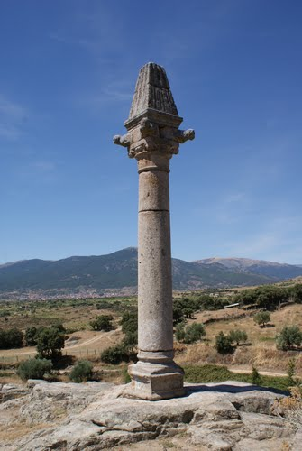

| MONUMENTOS | |||||||
|
|||||||
| LUGARES DE INTERÉS | |||||||
|
La Picota es un monumento ligado a la historia de nuestro pueblo, casi olvidada. Situada a la salida de la población junto a la calzada posiblemente prerromana, en el camino de Toledo a Valladolid; majestuosa, erguida, vigilante, sobre un pequeño montículo de piedra de granito, domina el Valle del río Alberche, manteniéndose en pie a pesar del paso de los siglos. Está formada por los siguientes elementos:
El material de su construcción es de piedra de granito. Se habla de rollo o picota, el rollo era la categoría administrativa de la localidad que se alzaba en las villas para impartir justicia y el régimen al que estaba sometida bien fuera real, secular, eclesiástico o concejil. Posiblemente el rollo y la picota, que tenía función penal, se funden en un único monumento en el siglo XV. En el siglo XIII en Las Partidas de Alfonso X El Sabio ya aparece prevista la pena de exhibición en la picota considerando esta pena como deshonra y castigo destinándola a los delincuentes condenados por penas leves. En el Archivo Municipal de Sevilla hay referencias sobre picotas en el siglo XV en unos documentos sobre Mayorazgos. La picota elemento de orden penal genuinamente peninsular, tuvo influencia en Portugal y Sudamérica, también se extendió a casi toda Europa, siendo utilizada para la aplicación y ejecución de la pena impuesta al condenado en épocas entre los siglos XIII y XIX aproximadamente. La Picota era emblema de que la población era villa y no aldea que tenía jurisdicción civil y criminal, que disponía de alcaldes propios que juzgaban en primera instancia los delitos, sirviéndose de ellas para dar publicidad a la ejecución de las penas corporales. Las picotas se levantaban previa autorización Real, cuando se concedía el título de villa, aunque tuviera esa característica se cambiaba o se establecía la jurisdicción de la misma. Una vez realizada la concesión real otorgada mediante documento público, el monarca delegaba en un juez, quien reunía a las autoridades y vecinos del Concejo dando lectura al Privilegio Real y se nombraba al alcalde, justicias y demás cargos públicos de requerimiento vecinal, designando los lugares públicos y procediendo al deslinde y amojonamiento del término propio de la nueva villa, con asistencia de los pueblos colindantes. Posteriormente se procedía al alzamiento del símbolo jurisdiccional La Picota. El Rey Felipe II con fecha 5 de mayo del año 1562 emite un Privilegio Real destinado a Cebreros, para evitar los gastos y costas que los setecientos cincuenta y cuatro vecinos de dicha villa tuvieran al ir a buscar justicia a la ciudad de Ávila. El Privilegio Real se encuentra en el Libro 1 de Células Reales del Monasterio del Escorial, “a vos hago villa para que useis y exerzays mia jurisdicción civil e criminal alta y baja…/… y que esa dicha villa de Zebreros haya horcas, picota, cuchillo y cárcel…/…y goce de insignia de jurisdicción que hasta aquí podía e debía usar e gozar la justicia de dicha ciudad de Avila y para ejercer podais elegir e nombrar en cada año alcaldes ordinarios y de hermandad e alguaciles y regidor mayor e por guardar y otros oficiales que se acostumbran elegir y nombrar en las villas realengas…/…mandamos que esta mia carta de merced sea pregonada públicamente por pregonero y ante mi por las plazas públicas de dicha villa de Zebreros y de la ciudad e de las otras villa y lugares que necesario sea…/… dada en la Villa de Alcalá a cinco dias del mes de mayo año del nacimiento de nuestro salvador….de mil quinientos sesenta y dos años. Yo el Rey” El 20 de mayo de 1562 se procedió al Apeo del término jurisdiccional de la villa de Cebreros con los pueblos comarcanos y de los comunes de la Villa del Hoyo ante el Secretario de su Majestad Felipe II. D. Pedro Galván. Por lo que se supone que la Picota data de la época del Rey Felipe II siglo XVI, para otorgar jurisdicción a la Villa de Cebreros, lo que ya no está tan claro es que si antes de conceder la Provisión Real, Cebreros era ya Villa y no aldea, viendo documentos anteriores a la Previsión Real no nos resuelve la duda al aparecer en algunos como Villa y en otros como aldea, a continuación vemos alguno de ellos. Un documento de 1452 nos habla de la villa de Cebreros, cuando Juan Fernández “escribano del rey nuestro señor e su notario público e escribano público en la dicha villa a merced de mi señor el maestre de Santiago, Condestable de Castilla” Al año siguiente día 8 de abril de 1453 desde Burgos el Rey Juan II de Castilla comunica al Concejo, Corregidor y autoridades de Ávila que ha ordenado “ que los logares del Tienblo, e Zebreros e Villalva con el señorio e juredición e términos a rentas e pechos e derechos que le avían seiydo tomados e ocupados, segúnd e por la forma e manera que primeramente los solíades tener, no enbargante cualquier apartamiento que yo dellos oviese fecho”, para que vuelvan a pertenecer a la jurisdicción de Ávila y su tierra, aunque se hubiesen constituido como Villas por sí o les hubiese entregado en el Señorío a cualquier persona, dejándo sin efecto alguno: “por cualesquier títulos e causas e razones, ca yo por la presente revoco, caso e anulo”. D. Félix de los Llanos y Torrigia en su libro “En el hogar de los Reyes Católicos” fecha 31/5/1475 “se veían obligados a pernoctar en conventos, casones o donde la noche los acogiera de camino…/… en no conocido y forzado apeadero de la Villa de Cebreros la Reina malparió. Los Reyes Católicos el 14 de abril de 1485 desde Alcalá de Henares envían a “Juan Corral, hijo de Juan Corral vecino de Cebreros, aldea de la ciudad de Avila…” Cebreros aquí figura como aldea. En los archivos del obispado de Ávila, se guarda un documento en “1506 fue fundada una Capellanía en la Iglesia de Santiago de la Villa de Cebreros” Zebreros en el año 1548 es citada por Pedro Medina en su libro “Grandezas y cosas memorables de España” como dentro de las 268 ciudades y villas principales del Reino de Castilla. Por las leyes liberales de comienzos del siglo XIX, en las Cortes de Cádiz, por Decreto de 26 de mayo de 1813, se ordena derribar las picotas. En muchos lugares no llegaron a derribarse como ocurrió en Cebreros, y por ello se cree que pudo ser trasladada a las afueras del pueblo en el asentamiento actual. Otras picotas se salvaron al ser cristianizadas al haber sido colocada una cruz de hierro en la cúspide. 25 años después, por Decreto de 25 de enero de 1837, la Reina Gobernadora Maria Cristina, en nombre de la Reina Isabel II restablecía el Decreto anterior. En 1963 se dicta el Decreto 51/1963 de 14 de marzo para la protección de monumentos menores. La Picotas han sido declaradas monumentos de interés histórico actualmente quedan unas 200 en toda España, entre ellas la de Cebreros. 
 |
||